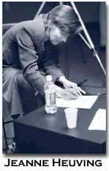

Jeanne Heuving
Working Note
Gaudy Night is the last section of my recently finished mixed genre manuscript, Snowball, an anti-portrait of the artist as a young woman. I composed Gaudy Night in part by drawing up lists of several sentences that I liked from three different novels, utilizing respectively Dorothy Sayers' Gaudy Night, Emily Bronte's Wuthering Heights, and Marguerite Duras' The Ravishing of Lol Stein. I melded words, phrases, and occasionally entire sentences together along with new writing into sentences. In composing Guady Night, it was important for me to hear an evolving syntax in advance of writing each sentence, letting words, images, themes cluster on the roping sentence as they would. Occasionally I quote an entire, unabridged sentence from these novels as well as other sources, including my own writing in previous sections in Snowball. Each of the fourteen sections of Gaudy Night was written to be about a page in length.
Gaudy Night
I.
To begin with the expectation of the fully completed sentence according to my whim firmly in view. While Harriet told her story, he fidgeted restlessly about the room, avoiding the broken glass and ivory on the floor with the automatic precision of a cat, and stood at length with his back to her. Her back to the assignation or was it his face in perpetual profile. Should she wish to write a more involved sentence she might sequester herself in the working out of its crannies and jewels. Should the tears of the crying woman emerald her throat with their sudden precision. Town seemed remarkably empty and uninteresting, a safe haven or dangerous beach. The beachhead of Mr. Pomfret's simple minded proposal elated her but now she was surprised by how she needed to alter his face, while all the while the first two communications were put firmly into the hands of Miss Vane. She ought to be blaming herself for not having seen what was happening to Mr. Pomfret and taken steps to stop it. Cat Street was crossed and the shadows of New College walls swallowed them up before she spoke. Then later, the first two communications came in the hands of Miss Vane. X misreading 'H.D. Vane' as 'H.D. Vine' put the note in the wrong gown. The rarely folding bulldogs had been having a lively time with the tree climbers in St. Giles and were now out for blood and now came through the archway at a smart trot. Then, as they came close, she realized it was Annie, looking strange without her cap and apron, taking the children for a walk. The beachhead of the yellowing square rectangle of childhood grass confirmed very little. An ant hill of bugles or black whores descending over the parchment as the trumpeter and his clandestine band of green men slowly approached the fen in the wooded vale. It could have been them as well as anyone else now arriving at the beachhead of want and destruction, of epaulets and apples. Should then it should not have been anything anyone would have wanted but which now all clamoured for in the want of their own destruction of incessant rains. Absent rains, now absent winds, and what else could Harriet voice but the broken glass even though she had the precision of a cat and was avoiding it. Cat Street was crossed and the shadows of New College walls swallowed them up before she spoke.
II.
Happily, after the first devastating fury, she found the relief of bad language. The next piece of news was that a violent quarrel had taken place between Miss Shaw and Miss Stevens, who were normally the closest of friends. The Proctor's bull dogs, who had been having a lively time with the tree climbers in St. Giles and were now out for blood, had come through the archway at a smart trot, and seeing a young gentleman, not only engage in nocturnal vagation without his gown, but actually embracing a female, leapt gleefully upon him, as upon lawful prey. Town seemed remarkably empty and uninteresting as behind closed doors square rooms with sequestered inhabitants pitted their somnambulant gestures. Without vaccinations, the town children could hardly be expected to be lead to water much less to drink of the distilled pool garnered in their parents' white, unblinking eyes. If only there could be some leakage to this incredibly beautiful day that went on in full awareness of its misgivings beyond her glassed in passageway. Yet, she thought, there was no use to orchestrate what would like spillways in the dead of night only further their own momentum in the draft of waylaid schedules in the Western United States. The Warden, seated in a deep chair near the fireplace, gave nobody any help, albeit they were all trying as hard as cats on a glassy mountain. Should shame like a wooden spatula be pushed under her tongue she doubted she would have the courage to continue rewarding herself with her own desserts. It had been a long year and now on her yellow lined pad of legal paper she sought to spell a gaudy hotel with its cases of jewels poorly protected in safes that were easily tripped. Memory's long assay provided not a little difficulty as she clung to each scrap as to a morsel, especially now that Cat Street was crossed and the shadows of New College walls swallowed them up. If only the beachhead and Mr. Pomfret remained in sight as well as all the others, with Annie at the helm, continuing their long and torturous ascent of the Matterhorn. She ought to be blaming herself for not having seen what was happening to Mr. Pomfret and taken steps to stop it. It mattered little but for the jewels in her throat and her eyelashes studded with sponges. There was no love, or all the love she could ever want, if only before having children she could amass all the fame and independence she would ever need, and at last settle down like a cat with a fur muff worn around his throat for the extra warmth.
III.
The belief was, of course, not susceptible to proof, but the possibility was suggestive. The terrible accouchement had begun and with it the news of Peter. It was quite true that the spontaneous affections of Reggie Pomfret had somehow made it easier to believe that Peter's own feelings might be something more than an artist's tenderness for his own achievement. She was surprised by how she needed to alter his face, when only much later, the first two communications came into the hands of one Miss Vane, mispelled Miss Vine. While Harriet told her story he fidgeted restlessly about the room, avoiding the broken glass and ivory on the floor with the automatic precision of a cat, and stood at length with his back toward her. Now pushed against the fence with bombers buzzing overhead, she wished to return to the scene of the maple grappling the hard yellow turf with its gnarled roots and thirst for rains. She wanted the tenderness of cardboard boxes in the full swing of sandbags of midwesterners in search of rains. She had been so cut off that little would avail her in this time of misplaced intentions and absent winds. Her back to the assignation or was it her face in perpetual profile. Cat Street was crossed and the shadows of New College walls swallowed them up before she spoke. With enough elbow grease even this would gleam. Her cat gazed at her lovingly, his whiskers shining in the lamplight, with all the admonition of someone hungry for the banquet to begin. Crossing Cat Street without even a backward look in her direction, he presumed to scan the sky. The beachhead would never be landed nor aeroplanes gunned from the story. In the slow squish of mud mud, the rubies would be crushed, pockmarked with blood. Only her throat fully exposed like the king's men broken necks in this welter of white washed tree trunks and flashing amulets. Full of ancient jibes and scabbards. She cheerfully opened the gates wide to the marauding army. But how to drift to Annie, looking strange without her eyes and apron, taking the children for a walk. Army ants, like black whores descended over the parchment, marauding peacocks with delicate cinched waists and torn maroon lace cascading over thighs. Hurt eyes indenting tails on spread skirts. She had much to say to Miss Vane, or was it Miss Vine, who prodded her with little ammunition except her own boredom and desire to get on with it. Then there was Vera's situation on which she longed to express herself although she dared not mention it in the company of others.
IV.
Then as they came close, she realized it was Annie looking strange without her cap and gown. Now that she had happened on this distant platform, she idly wondered what had happened to the jewel thief who had somehow disappeared in the new moon. If only in this strange wash of days she could immerse herself in a recliner so that she could barely wonder. Wasn't it here for which she had been aiming from the start in the long craze of fish caps and bottle necks. Her feet on the hassock with the grinning gargoyles. She could not get over the feeling of having returned from the dead. Coming upon a particularly beautiful place of washed out ditches she would think that if she had been dead a long time and now had suddenly come back to life how grateful she would be for all her old life and the frazzle of barbecues and rough hewn waters. Little more aided her never again. All the while the world went on in super animated color with great energy and compactness in the crunch of superannuated liaisons and lively bodies without pudenda. The beachhead of Mr. Pomfret's simple minded proposal elated her, while all the while the first two communications were put firmly into the hands of Miss Vane. The weather vine twirled in the flush of brisk winks. It appeared that he was lunching with the Master and that one of the All Souls men was lunching also. Overhead wires creating a magnetic field and earthquake danger. Happily after the first devastating fury, she found the relief of bad language. One by one the spurs of talk failed and died leaving the one tenor floating like a solo instrument, executing a cadenza when the orchestra had fallen silent. Peter, she felt sure, could hear the whole intricate pattern, every part separately and simultaneously, each independent and equal, separate but inescapable, moving over and under, ravishing heart and mind together. Town seemed remarkably empty and uninteresting, a safe haven or beach. The beachhead of Mr. Pomfret's simple minded proposal elated her but now she was surprised by how she needed to alter his face. If only she could drift to Annie and all the rest of them in the full swing of sandbags and tender cardboard boxes. Descending, she gave way to sudden dearth and decaying aneurysms of the least common denominator.
V.
The beachhead of Mr. Pomfret's simple minded proposal elated her, but now she was surprised at how she needed to alter his face. His back to the assignation or was it her face in perpetual profile. All the while she was backing into the corner of the livery, the huge gelded horses stomping their steamy breath into the chill morning stare. Should she instead have gone forward into the rainy morning how far her travels would have carried her into the inauspicious dawn. Her face to the assignation or was it his back in perpetual profile. Longings fully written in a miniature book of scrunched script and hemorrhaging eyes. If only she could fully inhabit that boxed in space and never any new disturbance incise her with fresh agility ever again. The tears of the crying woman emeralding her throat with their sudden precision, if it were not for the propriety of incessant rains. Still she sought the soft swing of sandbags in the boxed in place of her pudendum and eyes. Dark and true and tender is the North, but one needs to remember Gaudy. Then there was Vera's sedition on which she longed to expound if only the electrical high wires did not threaten to topple her square footing in a sudden earthquake excursion. My Susannah, this terse compartmented box of magnetic powers and runnerless drawers. The magic of a sutured place with the cicatrix coated in mercurachrome decorating the captured activity. The High Seas made rent of the poor tenement district as Cat Street was crossed and the shadows of New College walls swallowed them up before she parceled herself in jeweled drams. If only the Room of her single minded intention with its checkered floor tiles would wrest the waves from their destructive path. To be there each day only until the dawn of a new moon. Thus also my desire for a studio space, a work space, which I blissfully inhabit. She could hardly have predicted her fall, so fatefully had she wheeled her bike up the small abutment and onto the hardened path, where a few scraggly weeds rose up to meet her head. Again, it was summer and she longed to contain herself in the slow caterwaul of work days of incessant radios and baggy winds. And so, she began the cadenza of much maladroit and hope. And Peter, at any rate, had no niche, in the grey stones of Oxford.
VI.
The evidence should be handed over to Miss Vane, as the only person in the room who cannot possibly come under suspicion. At first we thought to entrust Annie, but later it seemed Miss Vane, with the interesting half turned face, should be our object of deposit. A curious woman, Miss de Vine, and undoubtedly with a varied experience behind those disconcerting eyes. Dark and true and tender is the North, and for that reason they've made a special effort for Gaudy. Should she have gone forward instead of backward, who knows how far her travels would have taken her on this rainy summer morning, also Friday. And Peter, at any rate, had no niche, in the grey stones of Oxford. She, for her part, entered room after room, of much maladroit and affection, each more interior than the last, until she was panning over the vast reaches of the Gobi Desert. The small indentations of color on the linoleum floor reminded her of long afternoons tracing rivulets like insects jutting irregularly to the north. They plunged their articulated bodies over cracks, climbed the pointy blue pebbles that stuck up in the uneven surface of the concrete, moving many times faster for their size than she could ever move. The concept of killing time was a new one to her despite the wastes of the children's blinking eyes. Some very straggly tabby cats and tiny kitties with long hair were walking around the pool. The general sense of the scene was of great bleakness with very few people and only occasional appearances of these animals. The soft thing looked askance through the window having no more power to depart than a cat possesses the power to leave a mouse half killed or a bird half eaten. Mr. Jenkyns came up and said a few pleasant words, remarking that he had to hurry off to go bathing with a friend at Parson's Pleasure. There was no need for her to hurry could she get down the stairwell all right alone. And meanwhile Miss Vane and Miss Vine entered a rare compact of unbreakable friendship while the summer evening came on with sudden darkness and a cold pelting rain like soot. The fine resilient blades of grass were in marked contrast to the big, sloppy leaves. He drove the punt vigorously forward. What, by the way, had she been doing the previous night?
VII.
She had her image–the world sleeping like a great top on its everlasting spindle– and anything added to that would be mere verse making. It was wonderful to stand so above the world, with a sea of sound below and an ocean of air above, all mankind shrunk to the proportion of an ant heap. Listen Mr Pomfret, I don't think I shall ever marry anybody. We have been very good friends. Can't we? Mr. Pomfret greeted this fine old bromide with a dreary snort. Incidentally, I established for a certainty, what I was sure of in my own mind from the start, that there was not a woman in this Common Room, married or single, who would be ready to place personal loyalties above professional honor. The communications had been prepared elsewhere and deliberately planted–in fact there were not enough letters left in the box to finish the message that had been begun to Miss Vane. A person from Gimmerton wishes to see you, ma'am. Devil daddy, was his answer. Instead of a nice, quiet throttling, there was a nasty fall, and a lot of blood, some of which, no doubt, got on the assailant's hand and dress. Should she have wanted jewels she would have singled out the bicycle thief getting into a car with his casket of flashing rubies as big as his nose and mouth holes. I believe that X misreading 'H.D. Vane' as 'H.D. Vine' put the note in the wrong gown. She searched in long corridors of wintry streams for the folded white until she, panning for gold in the summer morning of deeply limned blue and all the spaces between the pine needles shimmering black, catapulted down Horseshoe Falls. It was not the thorn bending to the honeysuckle but the honeysuckle embracing the thorn. She murmured that the children must be a great comfort. Long ago she first came upon the scene by the river and the joy of the first picnic but now only the debris of some half forgotten carnival flashed like lily pads in the deadened light. The Warden, seated in a deep chair near the fireplace, sunk into his winter reveries. Primly settling his white bands on his black sleeve, he went upon his walk unheeded, and no hand plucked his velvet sleeve.
VIII.
Though not to mention the leisurely pace of the story when his face was so in need of a wash cloth was to violate all expectations. Nobody but I ever did him the kindness to call him a dirty boy, and bid him wash himself. She did not want to concentrate on the diverse rocks in the clearing water save the square bent head of her companion should stare in tandem with her own. The snow lay yards deep in our road; and as we foundered on through the heaps of white stuff I reproached myself with my absence of a pilgrim's staff. She with distilled sleep seeping from a painted eye stopper murmured snow and hills mingling in bitter affecting suffocating wind and snow. To know no depiction but the tender north and even then to lose one's way with unguent speed. The soft thing looked askance through the window and the dismal spiritual atmosphere over came and more than neutralized the growing physical comfort where she ensconced her bruised body. Although she continued to tell her story stealthily, dogs, not cats, crowded the stanza of much maladroit and hope. In an arch under the dresser reposed a huge liver coloured bitch pointer surrounded by a swarm of squealing puppies, and other dogs haunted other recesses. I shall be as dirty as I please; and I like to be dirty and I will be dirty. A person from Gimmerton entered the by now predictable drawing room of eternal witness. That it was by some standards to be entirely expected and largely overdrawn hardly mattered, for it could never be as believable as the sutured recompense of her own wastrel desire. He swung the key purposely in his hand, much like Biter out for his evening walk will grab at his leash. She could not have refused anymore save she put out the fire in her own mineral eyes. Even so, fine grains of soot scooted out from the huge fireplace, blanketing hearth and floor with the granular black stuff. The kitchen was forced to retreat altogether into another quarter; at least I distinguished a chatter of tongues, and a clatter of culinary utensils deep within; and I observed no signs of roasting, boiling, or baking about the huge fireplace; nor any glitter of copper saucepans and tin cullenders on the walls.
IX.
Nobody but I ever did him the kindness to call him a dirty boy, and bid him wash himself. If you wash your face and brush your hair; it will be all right, but you are so dirty. I shall be as dirty as I please; and I like to be dirty and I will be dirty. They had been invited to spend the morrow and the invitation had been accepted on one condition: she begged her darlings might be kept carefully apart from that naughty swearing boy. Though not to mention his cloth which has seen three months' service in mire and dirt and his thick uncombed hair. The surface of his face and hands were dismally beclouded. Happily, after the sudden fury, she found the relief of bad language. The soft thing looked askance through the window, having as much power to depart as a cat possesses the power to leave a mouse half killed or a bird half eaten. Some very straggly tabby cats, long haired, were walking around the pool. I shall not stand to be laughed at. I shall not have it. A person from Gimmerton wishes to see you, ma'am. By now the perfume bottles on the table had taken on the magnificence of amber urns adorned with exotic animals grazing their cracked glazed surfaces. Antelopes and gazelles swilled in the chill evening air. At the counter all was for sale, but in the other recesses, where the tongues clattered, she sought to lie down with the liver colored pointer bitch and its swarming whelps. She felt herself to take on all the perfection and pricelessness of a rare bottle of perfume, immured in her body as darkly as angel wings rapidly flitting over a dawning earth. Having leveled my palace, don't erect a hovel and complacently admire your own charity in giving me that for a home. I gazed long at the weather worn block, and stooping down, perceived a hole near the bottom still full of snail shells and pebbles, which we were very fond of storing there with more perishable things. As fresh as reality, it appeared that I beheld my early playmate seated on the withered turf, his dark, square head bent forward and his little hand scooping out the earth with a piece of slate.
X.
A person from Gimmerton walked into the room, no more than any other person at that sudden time and place. In the deep recesses of the gibberish alcove did the speech of the living break into rank. He was the kind of man one might find around Hollywood, tall, blond, easy good looks, blackened eyes, vampire or ghoul. She felt herself to take on all the preciousness of a rare bottle of perfume, unguent blue and unstoppered graciousness. She murmured in richly jeweled tones as the liquored sleep escaped upwards from the corners of her gusting eyes. The gazelle and the giraffe loping peaceably while the antelope nibbled greens in the air vent of the altar. To step into the arena with the living and never with the dead. She could hardly have predicted her fall, so fatefully had she wheeled her bike up the small abutment and onto the hardened path, where a few scraggly weeds bruised her head. Instead of a nice quiet throttling, there was a nasty collision and a lot of blood, some of which no doubt got on the assailant's hands and dress. Rubies as big as his nose and mouth holes. A small amount of excrement beclouded the water where she kneeled fully clothed in her communion dress, little wisps of lace trailing in the downward spiral of the drain. Should anyone have seen her thus she would have died a thousand deaths but still she labored on with steadfast good will. I shall not stand to be laughed at. I shall not have it. Oh, Mr. Lockwood, I cannot express what a terrible start I got by the momentary view. Those deep black eyes! That smile and ghastly paleness. Disturbed her? No! she has disturbed me, night and day through eighteen years–incessantly–remorselessly till yesternight I was tranquil. I dreamt I was sleeping the last sleep by that sleeper, with my heart stopped and my cheek frozen against hers. It is a poor conclusion, is it not? An absurd termination to my violent exertions? I get levers and mattocks to demolish the two houses, and train myself to be capable of working like Hercules and when everything is ready, and in my power, I find the will to lift a slate off either roof has vanquished.
XI.
She gave the impression of being in a state of passive boredom, putting up with a person she knew she was supposed to be but whom she forgot about at the slightest prevarication. She uttered her own name with anger: Lol Stein. She always referred to herself by her full name, as if trying out this encumberance to her tongue. It was as though she had come there for the specific purpose of looking for or discovering something a house, a garden, a street, some object, something she could find only at night. When I spoke for the first time of the love between Anne Marie Stretter, the French ambassador’s wife in Lahore, and the Vice Consul, I felt like I had destroyed the book, and removed it from its expectation. By its absence this word ruins all the others, it contaminates them, it is also the dead dog on the beach at high noon, this hole of flesh. It was here on the same spot, that a girl from South Tahla began to adorn herself several months before the Town Beach ball draping dresses over her body, lacquering on make up. The clock like precision came next and the enormity removed all doubt, whereby Lol was ending the days when her heart was not yet touched completely. On the third floor of the Forest Hotel, a light goes on in one of the windows. I, in turn, tell her about what happened two nights before in my room, a sudden guttering of time and possessions. I had studied my room closely, moving various objects around, as though surreptitiously, making way for the vision she would give them, making way for her place among them: Lol moving among the unmoving objects. I pictured things being moved about into so many different positions that I became upset, then joyous. It was as though some sort of thickness, some ineptitude, came and lodged in my hands, because of my inability to decide what the exact position of these objects should be in relation to her life. I gave up the grave, gave up trying to fit her, alive, into the death of things.
XII
They began to move, to walk toward the walls, searching for imaginary doors. The half light of dawn was the same indoors and out. At last they found the way to the real door and began to move slowly forward, light crashing over their foreheads and splintering their irises. Since our previous assignation at the Forest Hotel, she has not spoken of Cat Street nor of the shadows that swallowed them up. A momentary indecision or was it her face in perpetual profile. The caterwauling of the dawn just before I want to see Town Beach with you again. I listen to her memory beginning to function, to take hold of the shapes which she juxtaposes, one beside the other like some game, the rules which have been lost. Sleep sweeping her nights in the unstoppered stoppering of the children's jeweled eyes. Unguent blue and angel wings flitting over a darkened earth. Her eyes are like velvet, the way only dark eyes can be, hers now, a mixture of still water and silt, revealing nothing at present except a kind of drowsy intellection. But tonight she is wearing make up, which is a little too heavy, it seems to me, and carelessly intuited. Immersed in her body, still asking where this body ought to be, where exactly to put it. In the soft thud of sand bags, they had watched the violinists file past, knowing no depiction but the tender north and even then to lose one's way in the declining horizon. The Town Beach casino, how well I know it, the ancient forests of her eyes giving way to eternal piece. Now searching for the door, they realize they had entered Annie, looking strange without her cap and gown. The bicycle thief and the crash onto concrete hurtled against the abutment of an embankment that stopped up this dead end street. A gaudy hotel with its cases of jewels poorly protected in safes easily tripped by her excessively lightsome eyes. Rubies as big as his mouth and nose holes. The gray shape is in the field of rye, the rye shape is in the field of grain. I remain at the window for a long time. She does not move. I have the feeling she is fast asleep. I refuse to admit the end which is probably going to come and separate us, how easy it will be, how distressingly simple, for the moment I refuse to accept it, to accept this end, I accept the other, the end which has still to be invented, the endless end, the endless beginning of Lol.
XIII.
She, who does not see herself, is thus seen in others. She is erecting a scaffolding which, it would appear, is temporarily necessary for her, a woods, a field of wheat, a patience. This trip, in the future, will be like the town of South Tahla is for her now, lying in ruins beneath her footsteps of the present. The train descends into the sea with a mighty roar and an explosion of metal dramaturgy, pince nez shattering in blinding ocean spray. Town seems remarkably empty and uninteresting, a safe haven or dangerous beach, but for the children at their games. The yellow square rectangle of grass confirmed very little except its persistence in her triangle of snow, suffocating, affecting, translucent, white. If only she could perish at the thought of her sudden right. Folding into themselves and the folded white. A person from Gimmerton in the now predictable drawing room of eternal witness stepped forward, as the speech of the living broke into rank. What is your opinion of our friend, Jack Hold? Devil daddy, was his answer. I danced with the woman from Uxbridge, danced well in fact, and I talked with her, I committed that crime as well, and I was relieved to commit it. The minute I saw her in her gray coat, in her South Tahla costume, she was the woman in the rye field behind the Forest Hotel. The woman who is not. And the woman who is here beside me. In the center of Town Beach, as white as milk, an enormous bird, poised for flight, its two equal wings trimmed with balustrades, its overhanging terrace, its green cupolas, its green shutters lowered against the summer sun, its rodomontades, its flowers, its angels, its garlands, its gold, its milk whiteness, as white as snow, as sugar: the municipal casino. She freezes because of something going on inside her, what? unknown, savage leitmotifs, swilling rose petals, cracked newspaper glass. The heat of summer which till that day she had listlessly endured explodes and spreads. She is submerged in it. Everything is: the street, the town, this stranger. What heat and what is this weariness? She examines everything. Not only the posters announcing coming events, the gala evenings and the concerts, but the display windows full of glittering jewelry, tufted dresses, and exuding perfumes as well.
XIV
Detached sentences of unfamiliar potency filled her notebook of irreplaceable space, covering every morsel of blank that the printer had left. Riffs of blackness overcoming night. Other parts scrawled in a childish hand inclined their spaced out printing to several pages laced together like sewing cards through holes of impenetrable absence. Coming upon a particularly beautiful place of washed out ditches, she would think that if she had been dead a long time and had suddenly come to life, how grateful she would be for her old life and the joy of the first picnic now diminished in dully reflecting lily pads. If only there could be some leakage to this incredibly beautiful day that went on in the full awareness of its misgivings beyond her glassed in passage way. The Warden deep in his winter chair twilled his pen in the waning firelight. One is under the bathroom sink where you put the stove. Another is in the rodomontade. Night was falling when I reached the Forest Hotel. The hotel is the last number on Forest Boulevard. A row of ancient alders leads up to the hotel, a few missing like the teeth on a child's plastic comb. On the third floor of the Forest Hotel, a light goes on in one of the windows. Her head is knocked backed in surprise, as she looks up, surveying the field from this third story flight. It fastens upon her eyes which, from a distance, are laughing as they come forward to meet me, the mineral light in them gleams bright and clear. We cannot even imagine how many axes there are in these stories. Love and the axe are inseparable. She sought floor joyces of constant rupture wedding her body of extreme tendentiousness. His nose and mouth holes as big as rubies. The odor of the fields drifts through the window. Lol dreams of another time, when the same thing that is going to happen would happen differently. In another way. A thousand times. Everywhere. Elsewhere, among others, thousands of others, who, like ourselves dream of this time, necessarily. This dream contaminates me, pursues me, through alterable, unalterable way stations of unguent speed.
Sources
Gaudy Night—Several complete sentences, partial sentences, and individual words were taken from Dorothy Sayers, Gaudy Night, Harcourt, Brace and Company, 1936; Emily Bronte, Wuthering Heights, The New American Library of World Literature, 1959; Marguerite Duras, The Ravishing of Lol Stein, trans. Richard Seaver, Pantheon, 1966; Helene Cixous, Three Steps on the Ladder of Writing, trans. Sarah Cornell and Susan Sellers, Columbia University Press, 1993; Marguerite Duras, Writing, trans. Mark Polizotti, 1997; Kathleen Fraser, New Shoes, Harper & Row, 1978.
BIO: Jeanne Heuving’s creative manuscript Snowball is made up of writing composed over the last decades. Her work has appeared as a chapbook, Offering (bcc press), and in Common Knowledge, Talisman, and Clear Cut. She has published critical work on several modernist and contemporary innovative women writers, including the book Omissions Are Not Accidents: Gender in the Art of Marianne Moore. She has recently completed a lengthy article, “'A Dialogue About Love [. . . in] the Western World' / Tracking Leslie Scalapino.” She is an associate professor at the University of Washington, Bothell, and on the graduate faculty of the University of Washington. She is a recipient of NEH and Fulbright research grants and is a member of the Subtext Collective.